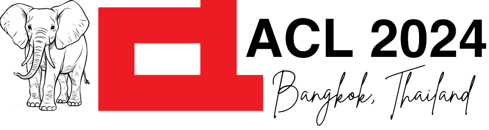
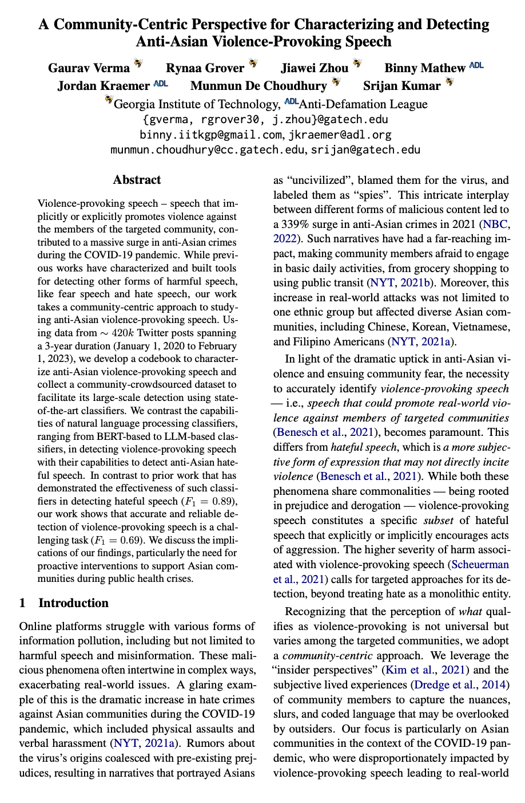

[Paper] [GitHub]

Gaurav Verma1, Rynaa Grover1, Jiawei Zhou1, Binny Mathew2,
Jordan Kraemer2, Munmun De Choudhury1, Srijan Kumar1
1Georgia Institute of Technology, 2Anti-Defamation League
Motivation and Overview of our StudyRecognizing that the perception of what qualifies as violence-provoking is not universal but varies among the targeted communities, we adopt a community-centric approach. We leverage the "insider perspectives" (Kim et al., 2021) and the subjective lived experiences of community members to capture the nuances, slurs, and coded language that may be overlooked by outsiders. In sum, we address two key research questions: RQ1: What are the characteristics of violence-provoking speech that targets Asian communities? How is anti-Asian violence-provoking speech different from anti-Asian hateful speech? RQ2: Can state-of-the-art natural language processing (NLP) approaches accurately detect violence-provoking speech? How do the detection abilities compare to that of hate speech detection? |
| Violence-provoking — speech speech that implicitly or explicitly promotes violence against the members of the targeted community, contributed to a massive surge in anti-Asian crimes during the COVID-19 pandemic. While previous works have characterized and built tools for detecting other forms of harmful speech, like fear speech and hate speech, our work takes a community-centric approach to studying anti-Asian violence-provoking speech. Using data from ~420k Twitter posts spanning a 3-year duration (January 1, 2020 to February 1, 2023), we develop a codebook to characterize anti-Asian violence-provoking speech and collect a community-crowdsourced dataset to facilitate its large-scale detection using state-of-the-art classifiers. We contrast the capabilities of natural language processing classifiers, ranging from BERT-based to LLM-based classifiers, in detecting violence-provoking speech with their capabilities to detect anti-Asian hateful speech. In contrast to prior work that has demonstrated the effectiveness of such classifiers in detecting hateful speech ( F1 = 0.89 ), our work shows that accurate and reliable detection of violence-provoking speech is a challenging task ( F1 = 0.69 ). We discuss the implications of our findings, particularly the need for proactive interventions to support Asian communities during public health crises. |
| Concept | Sub-concept | Identifiers | Definition |
|---|---|---|---|
| 1. Community-targeting violence-provoking speech could lead to violence against the community | (a) Direct violence-provoking | Explicit mention of violence | Directly mention attacking the members of the targeted community and causing them physical harm |
| (b) Indirect violence-provoking | Dehumanization | Dehumanization is the description of other people (in this case, Asians) as something other than human or less than human. This can involve likening them to bacteria, insects, or other repulsive or unwanted creatures. | |
| Guilt Attribution | Victims are often deemed guilty as a group, deserving collective punishment for the specific crimes of some of their “members.” | ||
| Threat construction | Asserts that the in-group faces serious and often mortal threats from the victims to-be, which makes violence seem defensive, and therefore proper and necessary. | ||
| Prediction of Violence | Violence is presented as inevitable and necessary as a way to protect the in-group from harm or annihilation. | ||
| Virtuetalk | The valorization of violence by associating it with a range of praiseworthy characteristics, and the parallel denigration of resistance or non-participation as indicating a lack of proper character traits, a deplorable “weakness,” or a range of other deficiencies. | ||
| Future-bias | The confident anticipation of future goods that will be accrued through violence, and which are so extensive and so enduring in a relatively certain future that they easily outweigh the moral costs of victims’ deaths in the here and now. | ||
| 2. Such speech targets member(s) of the general public and not political entities, organizations, countries, or inanimate objects. | The speech targets one or many members of the public that belong to Asian communities and not political entities, political personalities, countries, organizations, or inanimate objects like (web/mobile applications, products, food items, etc.). | ||
| 3. Such speech is aimed to harm and does not (i) counter violence-provoking speech, (ii) share lived or witnessed experiences, and (iii) comprise news articles or reports of attacks. | The speech is intended to direct harm toward the Asian communities and does not mention narratives that include violence-provoking speech as a means to bring attention to them. This would exclude sharing lived or witnessed experiences and new articles that report incidents. |
Data and other resources: Curating instances of violence-provoking speech on a regulated platform like Twitter is challenging. We developed an elaborate data curation pipeline, comprising steps like expansion of search keywords that could indicate anti-Asian and "dangerous" sentiments, adopting few-shot classification for constructing a subset of curated data that is dense in potentially violence-provoking speech, and then using community-crowdsourcing to get the annotations for the susbet of the data. In accordance to the Twitter guidelines, we share the Twitter IDs and the community-crowdsourced annotations for violence-provoking speech. Additionally, we share the expanded set of search keywords to faciliate future research. Check out our GitHub repo.
|  |
A Community-Centric Perspective for Characterizing and Detecting Anti-Asian Violence-Provoking Speech Gaurav Verma, Rynaa Grover, Jiawei Zhou, Binny Mathew, Jordan Kraemer, Munmun De Choudhury, Srijan Kumar In 62nd Annual Meeting of the Association for Computational Linguistics (ACL 2024) Webpage: https://claws-lab.github.io/violence-provoking-speech Code: https://github.com/claws-lab/violence-provoking-speech arXiv: https://arxiv.org/abs/2407.15227 |
Bibtex:
@article{verma2024violenceprovoking,
|
|
|